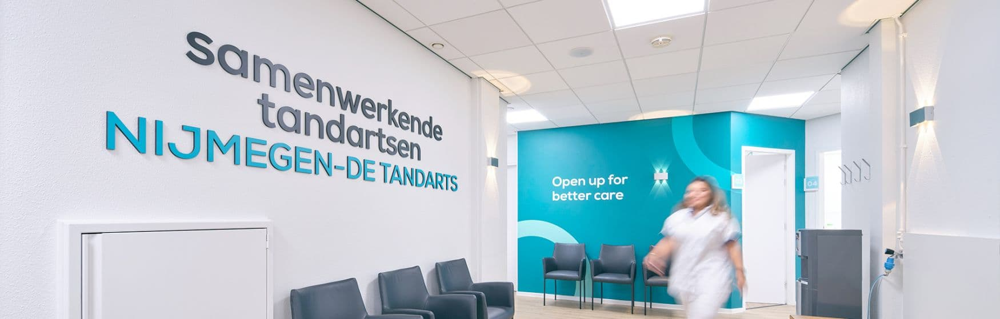
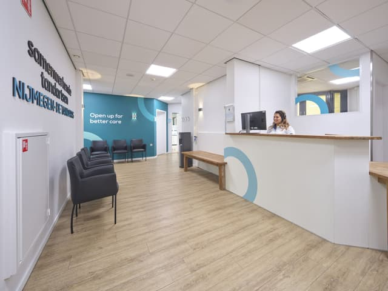
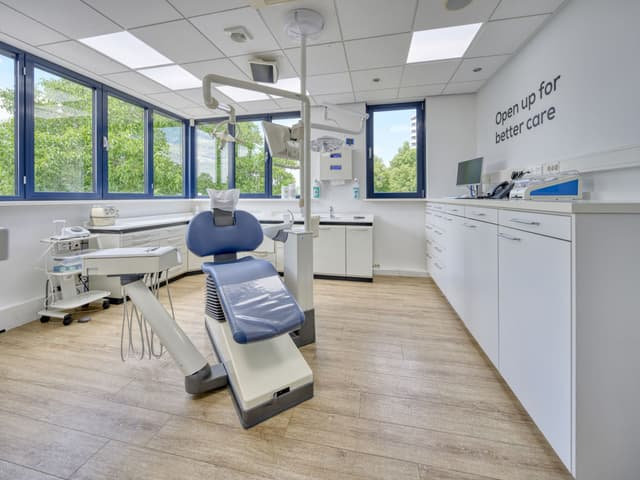
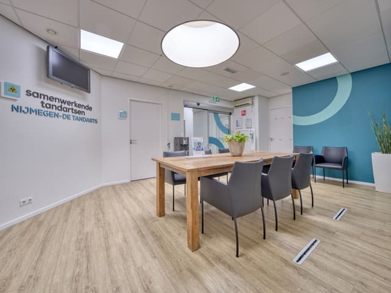
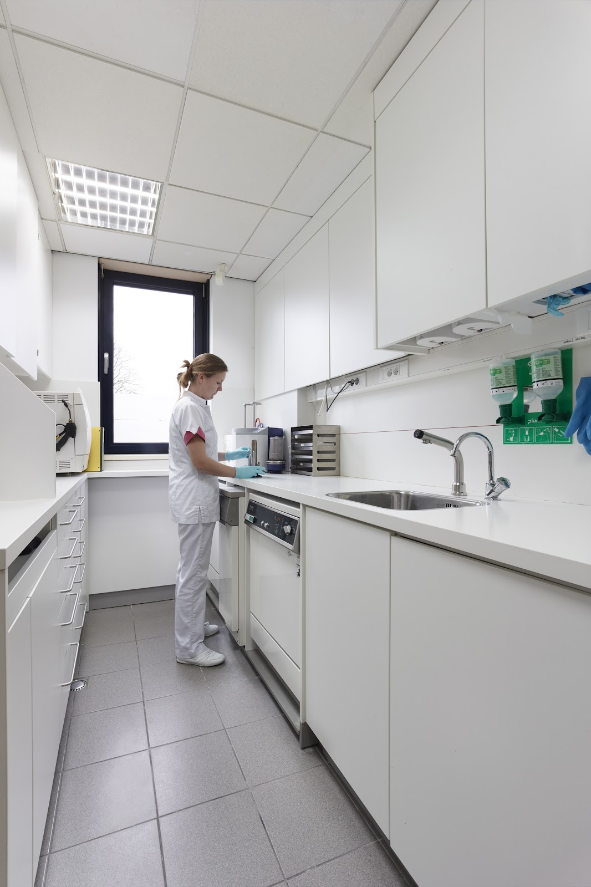
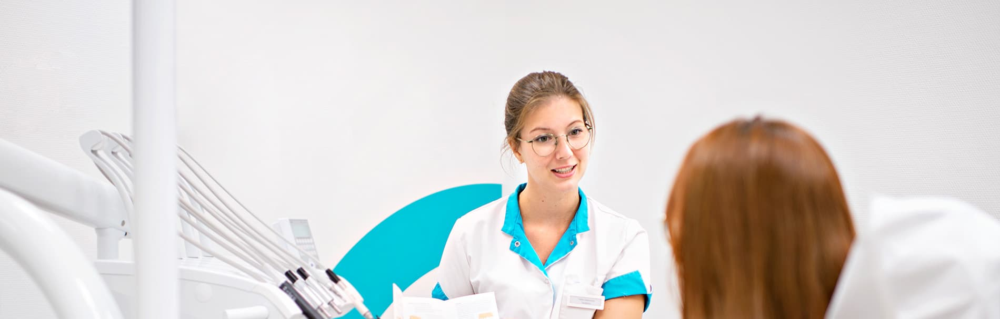
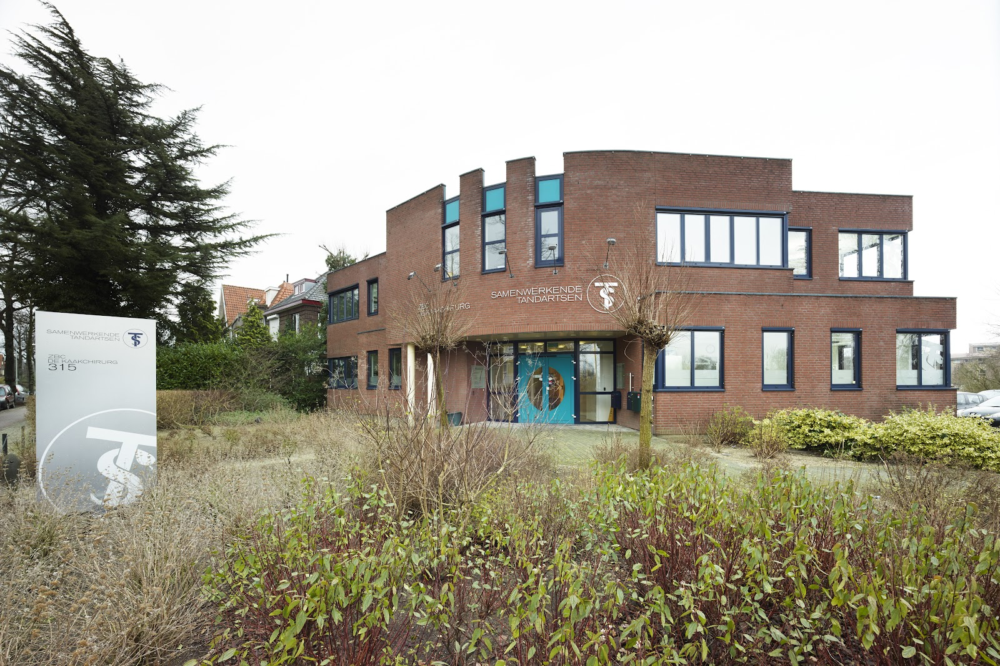

Tandarts in Nijmegen. Ook 's avonds.
Aan de Groenewoudseweg komt u voor een gezonde lach. Toegankelijk, gastvrij en gedreven, van maandag tot en met woensdag tot half negen 's avonds en op zaterdagochtend.

- Avondspreekuur
- Maandag tot en met woensdag van 08:00 tot 20:30
- Zaterdag open
- Van 08:00 tot 13:00
- Parkeren voor de deur
- Op eigen terrein, station Heyendaal op 600 meter

Tien behandelkamers en een eigen lab, onder één dak.
De praktijk aan de Groenewoudseweg heeft 10 ruim ingerichte behandelkamers. We werken nauw samen met ons eigen tandtechnisch laboratorium, dat in hetzelfde pand zit.
Ons team wordt periodiek bijgeschoold, zodat u zorg krijgt volgens de nieuwste technieken en de hoogste standaarden.




Naast algemene tandheelkunde kunt u bij ons terecht voor implantologie, endodontie, esthetische tandheelkunde en begeleiding als u angstig bent voor de tandarts.
Bekijk de behandelingenBehandelingen
Alles begint bij de halfjaarlijkse controle. Is er meer nodig, dan helpen we u hier verder of verwijzen we u op tijd door naar een specialist, zoals de parodontoloog of de orthodontist.
Controle en algemene tandheelkunde
Een halfjaarlijkse controle bij de tandarts of mondhygiënist is op iedere leeftijd belangrijk. We kijken of uw tandvlees gezond is, controleren uw gebit op gaatjes en kijken naar meer dan alleen de tanden. Soms maken we foto's om het goed te kunnen beoordelen. Daarna hoort u of er een vervolgafspraak nodig is, en hoe vaak u het beste op controle kunt komen.
Wat kost het?
Tandartstarieven worden jaarlijks vastgesteld door de NZa en zijn bij iedere praktijk hetzelfde. Tandsteen verwijderen of foto's staan apart op de factuur. Of u het vergoed krijgt, hangt af van uw zorgverzekering.
Kinderen tot 18 jaar krijgen tandheelkunde volledig vergoed uit het basispakket, met uitzondering van kroon- en brugwerk en orthodontie.
Implantologie
Het vervangen van een ontbrekende tand of kies met een implantaat. Kronen en ander werk worden gemaakt in samenwerking met ons eigen tandtechnisch laboratorium in hetzelfde pand.
Endodontie
Behandeling van de zenuw en het wortelkanaal van een tand of kies, zodat u die kunt behouden. Binnen het team werkt een tandheelkundig medewerker voor endodontologie.
Esthetische tandheelkunde
Behandelingen die vooral om het uiterlijk van uw gebit draaien. Twee van onze tandartsen zijn Invisalign behandelaar.
Angst voor de tandarts
Ziet u de stoel liever niet? We behandelen ook patiënten met angst. Vertel het ons bij de aanmelding of aan de telefoon, dan houden we er rekening mee.
9,0
gemiddeld cijfer van patiënten, uit 4954 beoordelingen op onze praktijkwebsite.
"Ik kom hier al 35 jaar. In die tijd verschillende tandartsen gehad en altijd tevreden over de werkwijze, sfeer en communicatie. Ik woon al 19 jaar niet meer in Nijmegen maar ben wel bij deze tandarts gebleven."
"Ik ben al lang tevreden cliënt bij deze praktijk. Laatst ben ik ook bij een acute klacht zeer snel en deskundig geholpen. Ook kon ik vanuit het buitenland altijd bellen voor overleg toen ik kiespijn had. Top!"
"Hele fijne tandarts. Patientvriendelijk. Goede zorg. Duidelijk over wat ze doen tijdens behandeling."
De mensen achter de praktijk
Tandartsen, mondhygiënisten, assistenten en de balie werken hier samen, zodat u met één telefoontje bij de juiste behandelaar komt.

Tandartsen
- N. DamyanovTandarts, Chef de CliniqueBIG 19912769302
- O. van der HeijdenTandarts, algemeen practicusBIG 39021513002
- G. RemijnTandarts, algemeen practicusBIG 49044375102
- S. PapricTandarts, algemeen practicus, Invisalign behandelaarBIG 29910704402
- A. PlachokovaTandartsBIG 09910877902
- V. TerpstraTandarts, Invisalign behandelaarBIG 49927799902
Toon het hele team
- P.J. ReussingTandartsBIG 19931756902
- F. BeukersTandartsBIG 79929947802
- C. WesselsTandartsBIG 59928038202
- J. PfundtTandartsBIG 59932596602
- J. KooloosTandartsBIG 59935481202
- L. van KouterikTandartsBIG 89937333602
- E. van der VlugtTandartsBIG 39937331102
- R. van DijkTandartsBIG 59935463602
- C.A. WoudTandartsBIG 19935465802
- T. VinkTandartsBIG 29937470802
- M. SchlingemannTandartsBIG 39939251202
- R. Coelho - van de VenTandheelkundig medewerker voor endodontologie
Mondhygiënisten
C. Picauly, E. Demmers, S. Nefkens, L. van Duren, L. Stokman, E. Lansink, L. Leemans, L. Heltzel, Z. Pellaers, A. van Groenendaal, N. van Houten, N. van Hees, K. Abdi, M. van Krugten
Preventie- en tandartsassistenten
Chafika (paro-preventieassistent), Wendy, Kitty, Fatima, Mijke, Jacqueline, Emmie, Iris, Mats, Lars, Anne, Fabienne (preventieassistenten), Renee, Irena, Shanee (tandartsassistenten)
Balie en organisatie
Miriam en Claudia (balie), Lisa (praktijkcoördinator), Helma (facilitair)
Langskomen
Groenewoudseweg 3156524 TX Nijmegen
Parkeren kan op ons eigen terrein. Station Heyendaal ligt op 600 meter.
Openingstijden
| Maandag | 08:00 tot 20:30 |
| Dinsdag | 08:00 tot 20:30 |
| Woensdag | 08:00 tot 20:30 |
| Donderdag | 08:00 tot 17:00 |
| Vrijdag | 08:00 tot 17:00 |
| Zaterdag | 08:00 tot 13:00 |
| Zondag | Gesloten |
Tijdens feestdagen kunnen de tijden afwijken.
